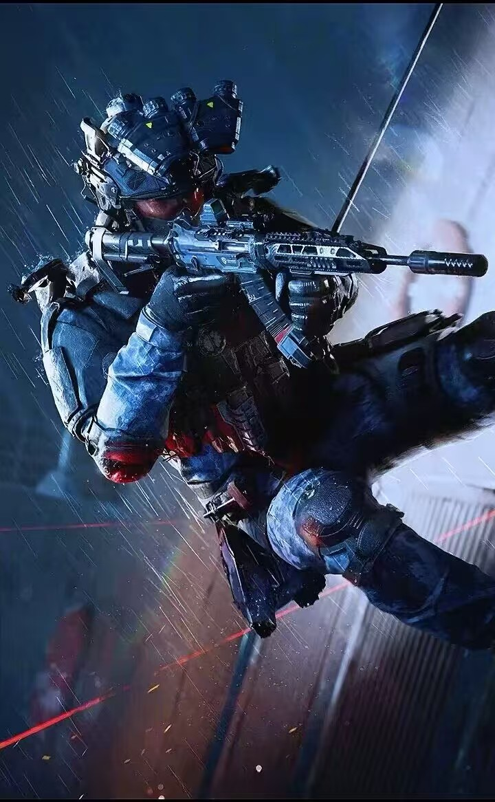
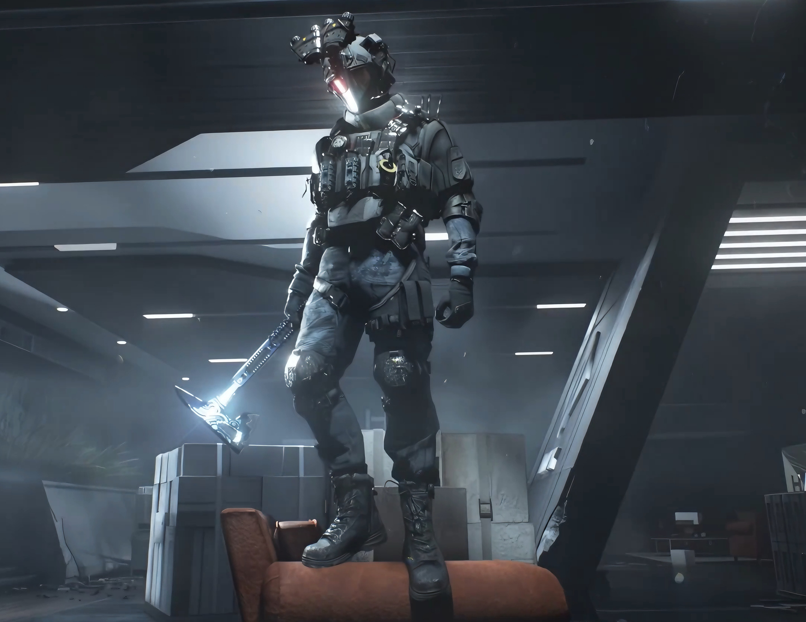
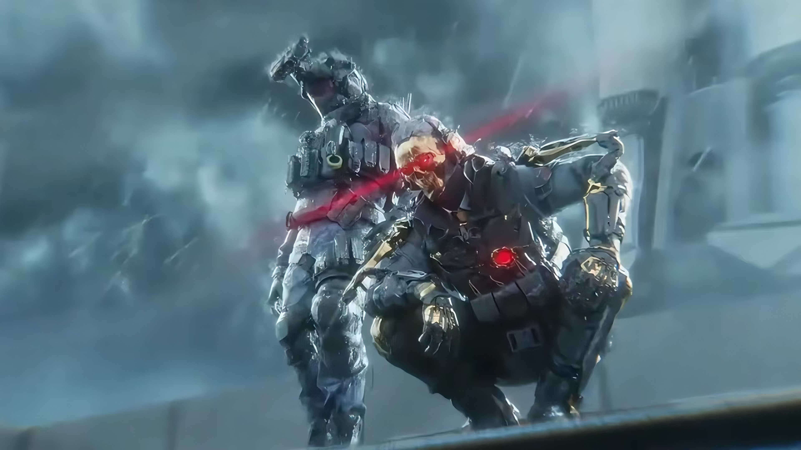
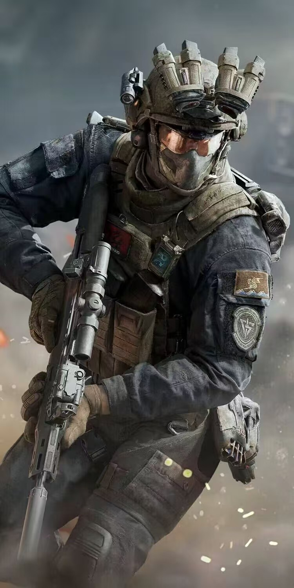
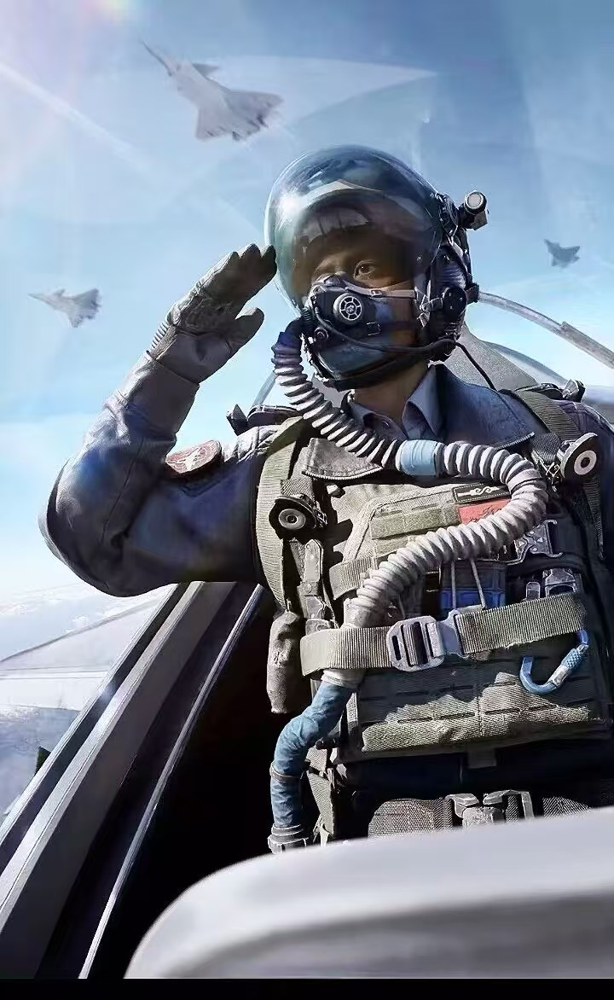
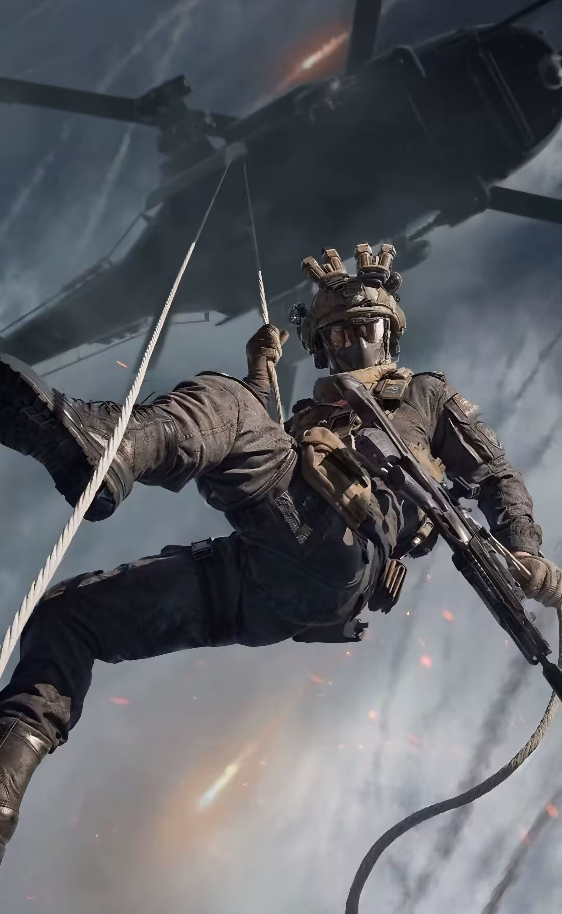
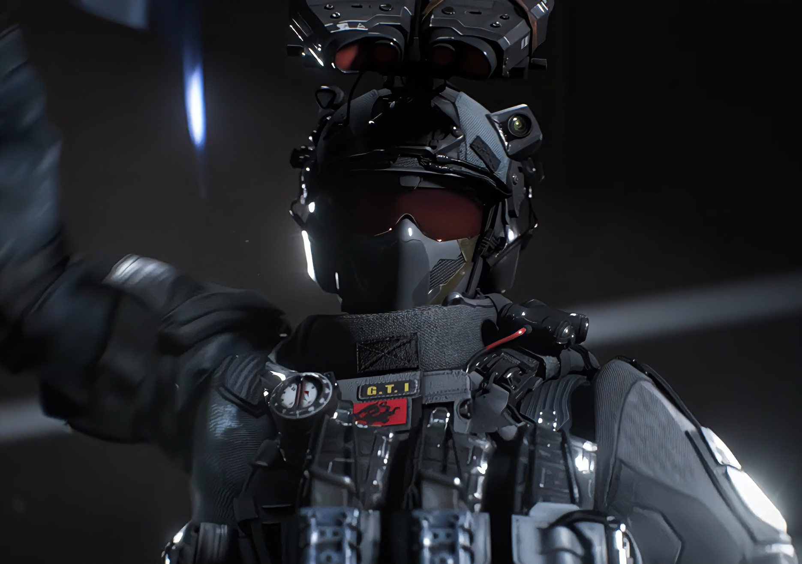
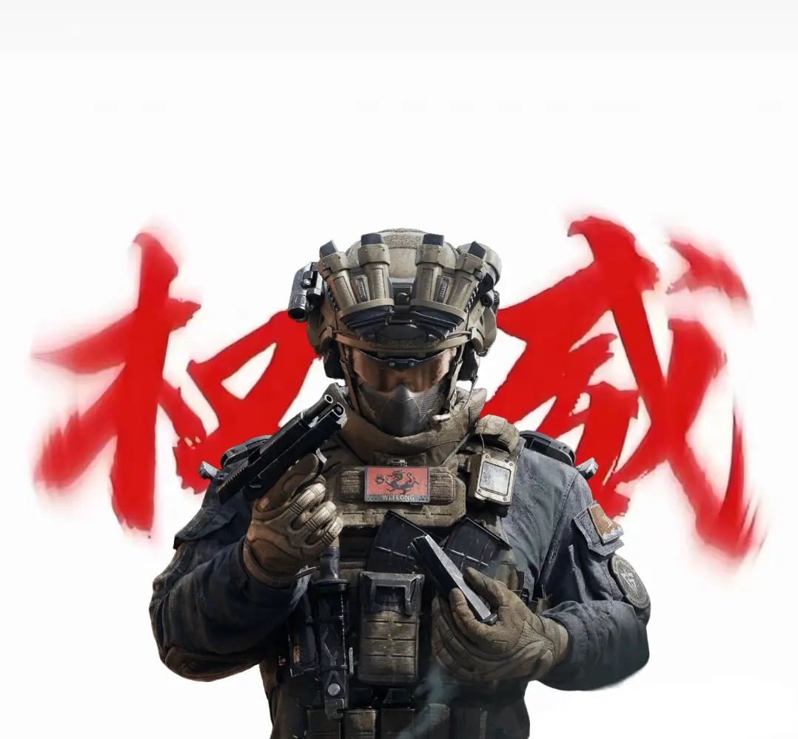

威龙
G.T.I.干员/前舰载机飞行员








关于我
我是王宇昊，曾是一名舰载机飞行员，也闯过猎人学院并拿下毕业第一的成绩，如今是一名特战队员。人生从不是一条直路，就像我从未想过会因2032年“寒沙行动”的一场爆炸，暂时告别挚爱的飞行——腹部被破片贯穿、右侧肋骨骨折，动能辅助装置几乎报废，舰载机飞行员的岗位也暂时离我远去。但我从不后悔，参军、参选航天员、执行每一次任务，每一步都是我自己的选择。
那场意外让我从驾驶舱走向了特战前线，起初追赶战友的训练进度确实不容易，可适应后才发现，特种部队的战场同样适合我。我总觉得，意外本就无法预料，最好的应对就是接受变化，同时守住初心。就像面对阿萨拉地区的复杂局势，我始终相信，任务从不止于调查目标，更要让和平重新落地——“不让任何一个人掉队”，这句理想主义的口号，我认，也会用行动去守。